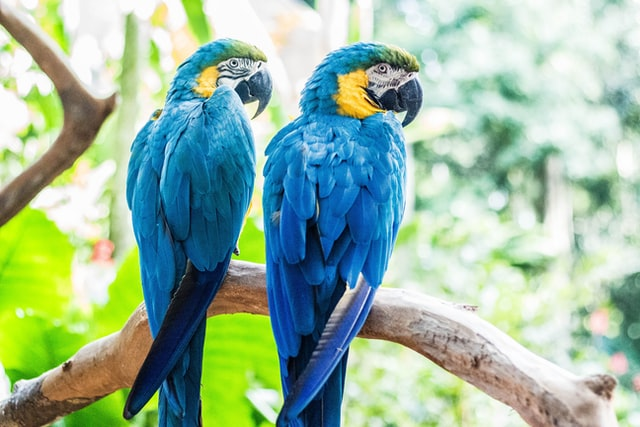
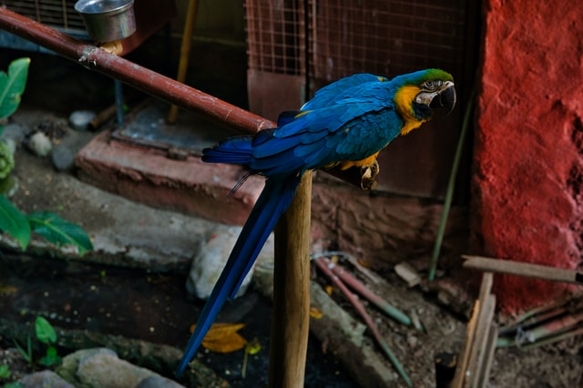

As araras-azuis (Anodorhynchus hyacinthinus) são animais que se destacam pela beleza, tamanho e comportamento. É a maior espécie entre os psitacídeos (papagaios, periquitos, araras, maritacas), chegando a medir um metro da ponta do bico à ponta da cauda e pesando até 1,3 kg. São animais com hábitos que chamam a atenção.
Elas gostam de voar em pares ou em grupo e nos fins de tarde, se reúnem em bandos em árvores “dormitório”. Dentre suas fontes de alimentação, estão as castanhas retiradas de cocos de duas espécies de palmeira: acuri e bocaiúva. No caso do acuri, aproveitam aqueles caídos no chão, ruminados pelo gado ou por animais silvestres. Já o coco da bocaiuva é colhido e comido diretamente no cacho.
Aos sete anos a arara-azul começa sua própria família. Os casais são fiéis e dividem as tarefas de cuidar dos filhotes. A fêmea passa a maior parte do tempo no ninho, cuidando da incubação dos ovos, enquanto o macho se responsabiliza por alimentá-la. O período de incubação dura aproximadamente 28 dias.
Os filhotes nascem frágeis e são alimentados pelos pais até os seis meses. Correm risco de vida até completarem 45 dias, pois não conseguem se defender de baratas, formigas ou outras aves que invadem o ninho. Somente com três meses de vida, quando o corpo está todo coberto por penas, se aventuram em seus primeiros vôos. Em média, a fêmea tem dois filhotes, mas em geral, só um sobrevive.
Essa bela ave que encanta a todos com sua cor vibrante e som alegre e barulhento vem sofrendo com a destruição dos habitas e com a captura ilegal para tráfico de animais silvestres. A espécie está na lista de espécies ameaçadas de extinção devido à caça, ao comércio clandestino e à degradação de seu habitat natural por conta do desmatamento.
...
A LUTA PELA PRESERVAÇÃO
O trabalho dos pesquisadores envolve:
- Monitoramento, recuperação e manejo dos ninhos naturais e artificiais
- Instalação de ninhos artificiais
- Observação do período de reprodução das aves e seus resultados
- Acompanhamento dos filhotes, com pesagem e coleta de sangue para exames laboratoriais e identificação genética
- Ações de educação ambiental, com palestras nas escolas da região
- Atividades com as crianças e visitantes à sede do Projeto Arara-Azul
--------------------------------------------------------------------------------------------------------------------------------------------
Por Gustavo Almeida Werkhauser, 09 de maio de 2021